Decrypt HTTPS
A local root certificate issues per-host certificates on the fly. Install it on a device or straight into the iOS Simulator from Settings.
New: breakpoints, map & rewrite and scripting
Wiretide is a native macOS debugging proxy that puts HTTPS requests, WebSocket frames and MQTT packets in one timeline, then lets you pause, rewrite, script and replay them.
Free to capture and inspect · macOS 14 Sonoma or later · Apple silicon and Intel · Notarized by Apple
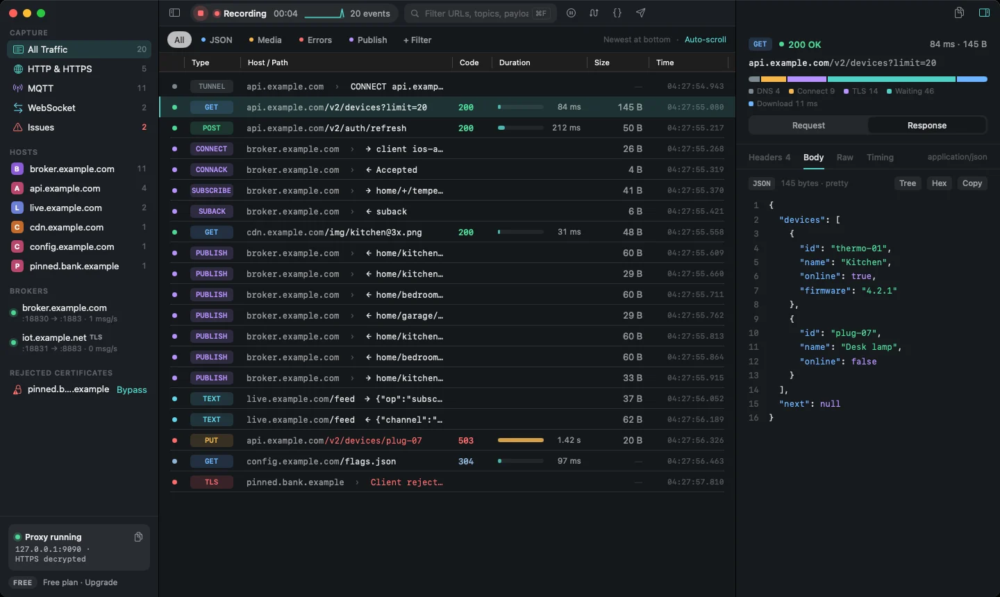
Free features
A local root certificate issues per-host certificates on the fly. Install it on a device or straight into the iOS Simulator from Settings.
Every packet from CONNECT to DISCONNECT, for MQTT 3.1.1 and 5, with properties, QoS, retain flags and topic aliases resolved.
Upgrades over HTTP or decrypted HTTPS are relayed with every frame decoded. MQTT-over-WebSocket subprotocols show up as MQTT.
Full-text search across URLs, headers, bodies, topics and payloads, plus one-click filters for JSON, media, errors and publishes.
When a client rejects the certificate, Wiretide says so instead of failing silently. Bypass the host with one click.
DNS, connect, TLS, waiting and download phases for every request. Export HAR 1.2 for HTTP and JSON Lines for MQTT.
Built for MQTT
Most proxies stop at HTTP. IoT and real-time apps don't. Point your app at a local port and Wiretide relays it to your broker, decoding every packet on the way through.
home/kitchen/temperature the way you think about it, with the last payload, message rate and counts per topic.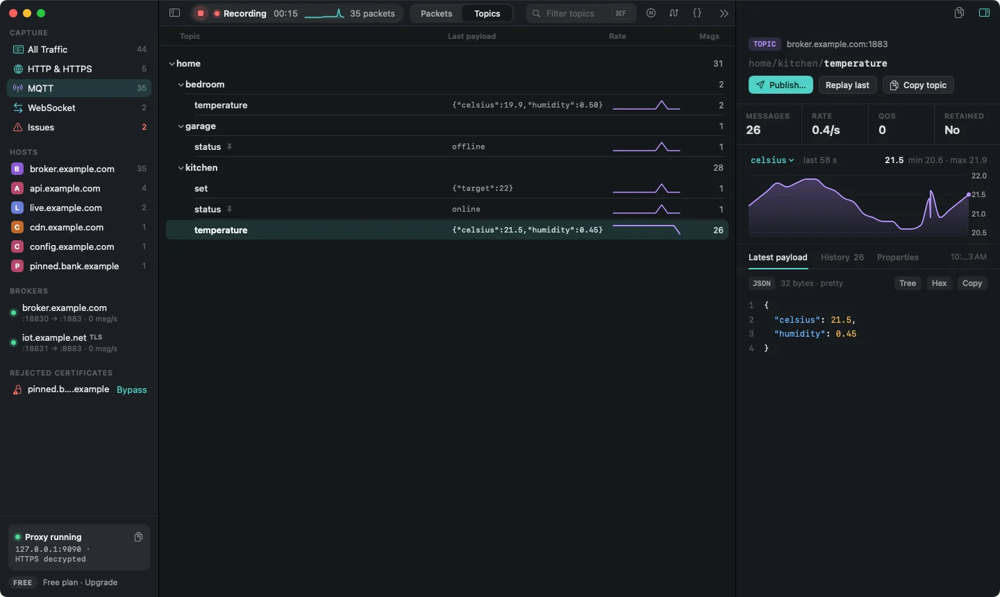
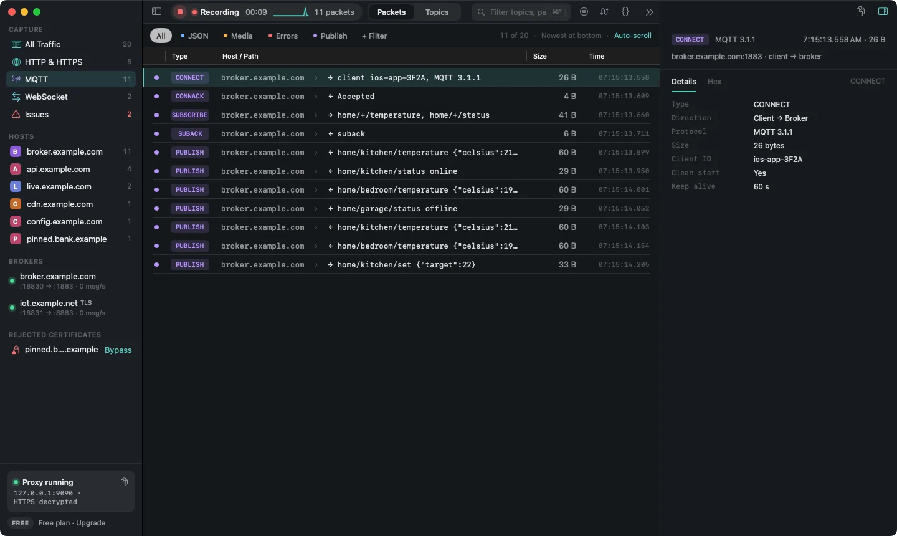
Pro tools
Test the edge cases your backend can't give you on demand: a slow response, a missing field, a broker that sends 41.5 °C. Pro works on HTTP and MQTT alike.
Edit the method, URL, headers, status or body in place, then continue, return your edit or abort.
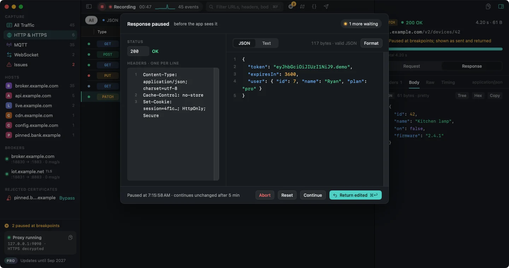
Rules apply live as traffic flows, with no restart and no code changes in your app.
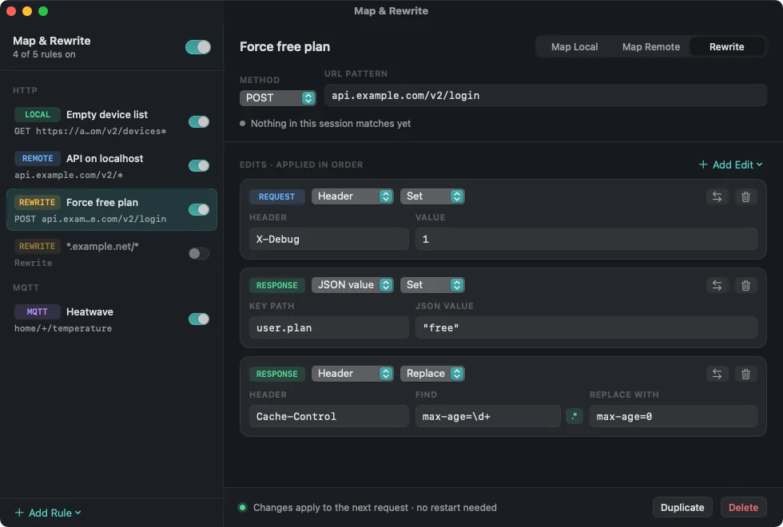
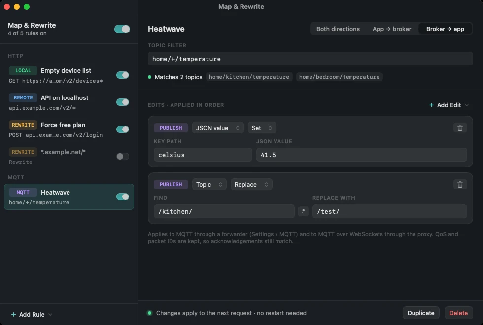
Pick a topic, QoS, retain flag and MQTT 5 properties, then send once or on a repeat to test how your app copes.
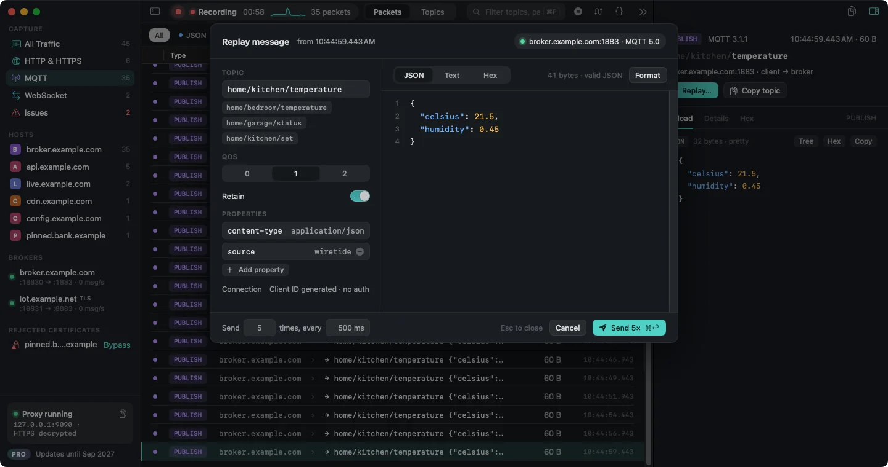
Define onRequest, onResponse or onPublish to edit traffic, or answer locally with respond().
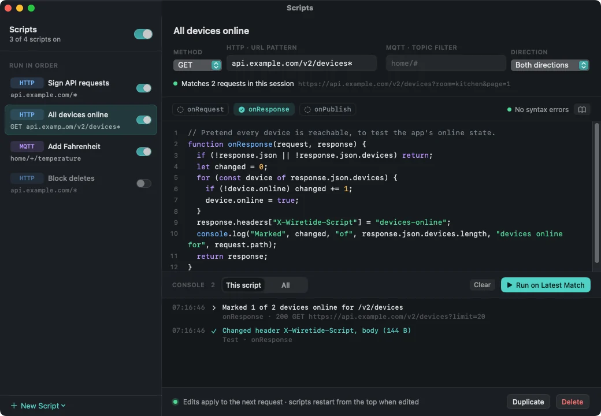
A closer look
Written in SwiftUI on top of SwiftNIO. Dark and light mode, universal for Apple silicon and Intel, and no Electron.
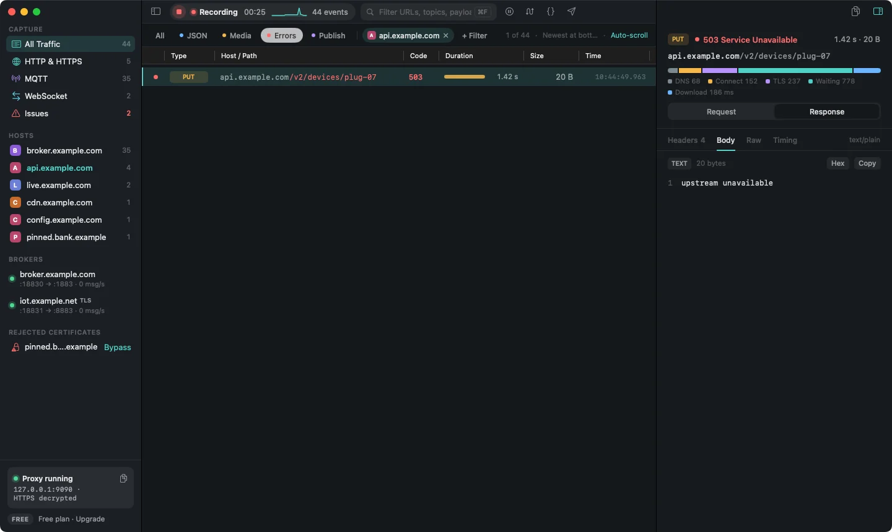
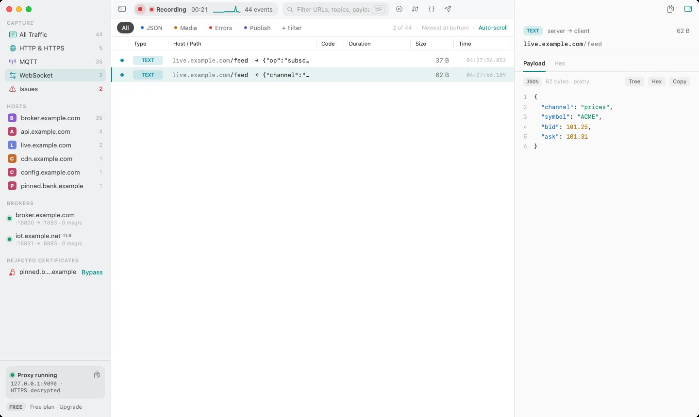
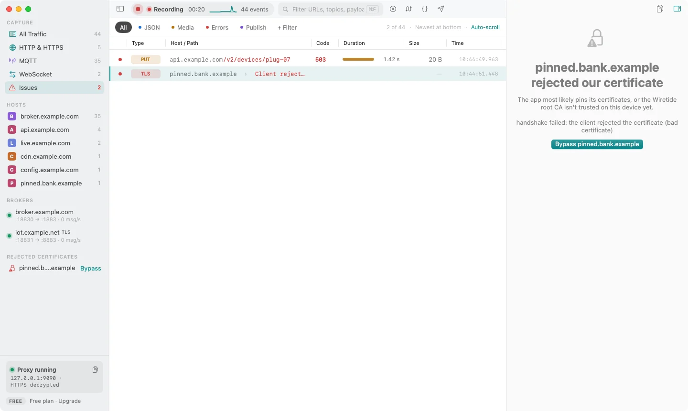
Pricing
Capturing and inspecting stay free. Pro is a one-time purchase with 12 months of updates, and the version you have keeps working forever.
$0
Forever, for capturing and inspecting.
Early-bird price for the waitlist
$79one time
Includes 12 months of updates. Keep using your version forever.
Prices in USD. Tax is calculated at checkout.
FAQ
No. Captures are stored locally in a SQLite database on your Mac, and scripts run on your Mac too. The only network calls the app makes on its own are checking your Pro license with the store and checking for updates.
Capturing and inspecting everything is free: HTTP, HTTPS, WebSocket and MQTT, search, timing and export. Pro adds the tools that change traffic (breakpoints, map and rewrite, MQTT publish and replay, scripting) and keeps unlimited saved sessions.
A debugging proxy needs to run a local proxy, install a root certificate and talk to the iOS Simulator, which the App Store sandbox doesn't allow. Wiretide is signed with a Developer ID and notarized by Apple, and it updates itself.
Add your broker in Settings. Wiretide listens on a local port, for example localhost:18830, and forwards to the broker. Point your app at that port. MQTT over WebSocket is picked up automatically through the HTTP proxy, and rules and scripts apply there too.
Yes. The Simulator uses your Mac's proxy settings, and Settings can install the root certificate into a booted Simulator for you. For a physical device, set the Wi-Fi proxy to your Mac and trust the certificate on the device.
Pro keeps working forever on every version released within 12 months of your purchase. Renew if you want the newer ones. A license also keeps working offline for 30 days between checks.
Join the waitlist for release news and the early-bird price. No spam, one email when it matters.
Free to capture and inspect · macOS 14 or later